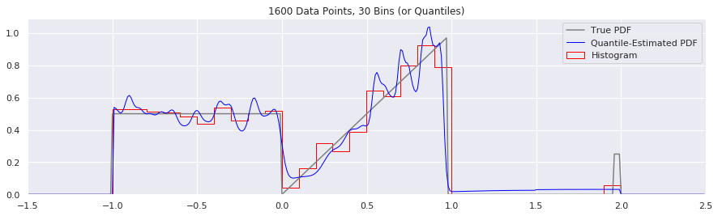

The histogram is most scientists’ tool of choice for viewing the distribution of values of a single variable. But lately I have been exploring an alternative: quantiles (e.g. deciles, percentiles, etc). Viewing data in this way has several advantages to histograms, including robustness to outliers and a freedom from apriori assumptions about the range or smoothing level of the data.
This post has some code written in Python. If you don’t have it already, you may want to follow along by installing Jupyter and opening up a notebook.
Generating Artificial Data
We’ll begin by inventing an unusual probability distribution with characteristics that will highlight some problems with histograms. We’ll choose a cumulative distribution function (CDF), probability density function (PDF), and inverse CDF that are easy to evaluate analytically. The distribution will be jagged, bimodal, and have a small a blocky sidebands to represent outliers.
Understanding the python code used to produce artificial data is not essential to understand the rest of this article, but the basic trick used in the following code is to pick random points on the Y axis between 0 and 1, draw a horizontal line over to where it intersects the cumulative density function, and then use the intersection’s X coordinate as your random sample. You can easily produce samples from any distribution with this technique.
def unusual_distribution_cdf(x):
'''Returns the cumulative distribution function of an unusual distribution.'''
if (x < -1): return 0
elif (x < 0): return 0.5*x + 0.5
elif (x < 0.98): return 0.5*x**2 + 0.5
elif (x < 1.96): return 0.5*(0.98)**2 + 0.5
elif (x < 2): return 0.25*x + 0.5
else: return 1
def unusual_distribution_pdf(x):
'''Returns the probability density function of an unusual distribution.
Derived analytically from unusual_distribution_cdf(). '''
if (x < -1): return 0
elif (x < 0): return 0.5
elif (x < 0.98): return x
elif (x < 1.96): return 0
elif (x < 2): return 0.25
else: return 0
def unusual_distribution_inverse_cdf(y):
'''Returns the inverse cumulative density function of an unusual distribution.
If you feed random numbers from 0 to 1 into this, it produces numbers that are
effectively sampled from the probability density function.'''
if (y < 0): return None
elif (y < 0.5): return 2*y-1
elif (y < 0.25*(0.98*2)+0.5): return math.sqrt(2*y - 1) # 0.95125 = 0.5*0.95**2 + 0.5
elif (y < 1): return 4*y-2
else: return None
def calc_true_cdf(xs):
return [unusual_distribution_cdf(x) for x in xs]
def calc_true_pdf(xs):
return [unusual_distribution_pdf(x) for x in xs]
def sample_from_pdf(n_samps):
return [unusual_distribution_inverse_cdf(y) for y in np.random.uniform(size=n_samps)]
Most people will prefer to simply plot the CDF and PDF and see what it looks like:
xs = np.arange(-1.5, 2.5, 0.01)
fig = plt.figure(figsize=(15,4))
plt.plot(xs, calc_true_cdf(xs), label="True CDF", color='black')
plt.plot(xs, calc_true_pdf(xs), label="True PDF", color='gray')
plt.legend()
plt.xlim(-1.5, 2.5)
We won’t need to show the CDF again – it was merely a visual guide to help see how to generate samples from the distribution. (It also is the same trick used when using percentiles to estimate a probability density function, as we shall see.)
For the rest of this article, we’ll use two collections of samples, which we’ll call A and B:
n_samps = 200
A = sample_from_pdf(n_samps)
B = sample_from_pdf(n_samps)
Problems with Histograms
Building histograms on data A and data B will immediately highlight some of the problems with histograms:
num_bins = 30
fig = plt.figure(figsize=(15,4))
plt.plot(xs, calc_true_pdf(xs), label="PDF", color='gray')
plt.hist(A, num_bins, density=True, histtype='step', label="Histogram for A", color="red")
plt.hist(B, num_bins, density=True, histtype='step', label="Histogram for B", color="blue")
plt.xlim(-1.5, 2.5)
plt.legend()
Several annoyances are obvious:
-
Histograms require assumptions about the range of the distribution. Histograms usually require that you choose a minimum, maximum, and number of bins with which to tile that range. When one doesn’t know a priori the min and max, it is common to use the limits of the sampled data, specify the number of bins, and then calculate the bin edges automatically. Unfortunately, this means that it is almost guaranteed that two sets of sampled data will have different bin edges, even when taken from the same distribution. In the above figure, you’ll note that the bin widths for A and B are different, because in sample set B, there were no points sampled around .
-
Histograms are hard to combine or build incrementally. Let’s pretend that A is your existing estimate of the distribution, and B is a new batch of data that just came in. Furthermore, let’s imagine that you don’t want to recompute your histogram from scratch, but want to combine the histograms of A and B to produce a new histogram. How would you combine two histograms that have different bin widths and numbers of bins? While possible, I hope you can see that it would be awkward and leaves much to be desired.
-
Histograms obscure the shape of the data when there are large outliers. For illustration purposes, the little “sideband” around is not that far from the main distribution. But you can imagine that if those outliers were at and the number of bins were fixed at
num_bins=30, the range of the data would be so large that almost all of the data would fall in the first bin, and all others would be zero. Another way of stating this problem is the reverse: when you have lots of data in a single bin, you should theoretically be able to infer more about the internal structure of that bin. Unfortunately, when using a histogram, one can never resolve anything finer than a bin width.
Another, more subtle problem that we won’t get into today is that a histogram has a varying number of data points per bin. This means that your error bars (or confidence interval) on each bin will have different magnitudes. It is disappointingly rare for error bars on histograms to be plotted – but without error bars, it’s not science!
Quantile-Estimated PDFs
We will now explore using quantiles to represent the sampled distribution, and see how that differs from the histogram representation. For those of you who have forgotten what a “quantile” is, it is just a generalization of the concept of a percentile. The basic concept of quantiles is to sort some data by value, and then sequentially group the sorted data into equal-size groups. When points, we call them “deciles”. When , we call them percentiles. A list of percentiles of family income would give us 101 numbers (from 0% to 100%). The 0th percentile would be the lowest income, the 50th percentile would be the median, and the 100th percentile would indicate the maximum family income in the data set.
Let’s see how you could use the percentiles to generate a histogram-like plot. The basic idea is to use the precentiles to produce a cumulative distribution function, and then take a numerical derivative to get the probability density function.

Now let’s look at some code that will actually do this. To make the comparison between histograms and quantiles fair, we will use the same number of quantiles as we did histogram bins.
def calc_quantiles(data, num_quantiles):
percentiles = [100.0*p/num_quantiles for p in range(0, num_quantiles+1)]
quantiles = [np.percentile(data, p) for p in percentiles]
return quantiles
num_quantiles = num_bins
quantiles = calc_quantiles(A, num_quantiles)
# To plot the percentiles as a histogram, we need to take the "derivative"
# (actually, the first difference) and pad the ending with a near-zero value
quantile_pdf = 1.0 / (num_quantiles * np.append(np.diff(quantiles), 10**10))
fig = plt.figure(figsize=(15,4))
plt.plot(xs, calc_true_pdf(xs), label="True PDF", color='gray')
plt.hist(A, num_bins, density=True, histtype='step', label="Histogram of A", color="red")
plt.step(quantiles, quantile_pdf, where='post', label="Quantile-Estimated PDF of A", linewidth=1, color="green")
plt.xlim(-1.5, 2.5)
plt.legend()
There are several immediate things to notice about the quantile estimate:
-
Rather than break up the estimate of the PDF into equal bin-widths on the X axis as the histogram did, the quantile-based estimate of the PDF divides the probability mass into equal-area rectangles that are squished and squashed to be short and wide or tall and thin. Around there is a short and wide bin, and around there are very tall and narrow rectangles.
-
There appears to be more distance between the Quantile-estimated PDF and the true PDF than with the histogram around the area. We’ll discuss whether this is really true or not in a moment, but it appears this way because the relative bin-widths of the quantile-estimated bins are smaller. The same effect would occur if we had used smaller bins for the histogram; it suggests that we may be able to use fewer quantile points than we would histogram bins.
-
The quantile representation assumes that the distribution is continuous, so the “outliers” on the far right have now been spread out over the whole range . It ends up predicting such a low value that it is not very visible on this plot, but it is nonzero.
Point one is most important factor to keep in mind. With histograms, we give each bin an equal amount of information, regardless of how many points fall into it. With quantiles, we give each fraction of data the same amount of information.
Smoothing with Gaussian Kernels
Smoothing a histogram is often done with a kernel density estimate, which convolves a kernel across all the histogram bins. We can do something similar with quantile-estimated PDFs.
Let’s use percentiles for an example. Each percentile represents 1/100th of the whole data set. It is easy to imagine us placing 100 equal-area kernels, one over the barycenter of each percentile-bounded rectangle. Anything with unit area would work – rectangles, triangles, gaussians – but because of its smooth properties, we will select a unit-area gaussian as our kernel:
where
We would then sum all of these unit-area gaussians together, and divide by the number of quantile bins. Graphically, the intuition looks like this:
As you can see in the figure above, the key intuition here is to scale the standard deviation according to the bin width. Tall, narrow bins produce tall, narrow gaussians. Short, wide bins produce short, wide unit gaussians. The code to do this is fairly straightforward:
# Halfway between each two quantiles, put a unit-area gaussian kernel with a stddev (sigma) equal
# to half the distance betwneen the two quantiles, scaled by smoothing factor K.
def gaussian(x, mu=0, sigma=1):
return (1.0 / (sigma * math.sqrt(2*math.pi))) * math.exp(-0.5 * ((x - mu)/sigma)**2)
def smoothed_pdf(xs, quantiles, K=1.0):
'''Returns a smoothed PDF estimate'''
num_quantiles = len(quantiles) - 1
pdf = np.full_like(xs, 0) # Initialize "hi-rez" PDF to be zero
for i in range(num_quantiles):
p0 = quantiles[i]
p1 = quantiles[i+1]
sigma = K*(p1 - p0) / 2
mu = (p1 + p0) / 2
for j in range(len(xs)):
x = xs[j]
if (x < (mu - 5*sigma)) or (x > (mu + 5*sigma)):
continue # Skip because it's >5 stddevs away
else:
pdf[j] += gaussian(x, mu, sigma)
pdf = pdf / (num_quantiles) # Rescale to unit area
return pdf
# To plot the percentiles, we need to take the derivative of it
fig = plt.figure(figsize=(15, 4))
plt.plot(xs, calc_true_pdf(xs), label="True PDF", color='gray')
plt.plot(xs, smoothed_pdf(xs, quantiles, K=1.0), label="Smoothed Quantile-Estimated PDF (K=1)", color="blue", linewidth=1)
plt.plot(xs, smoothed_pdf(xs, quantiles, K=3.0), label="Smoothed Quantile-Estimated PDF (K=3)", color="purple", linewidth=1)
plt.hist(A, num_bins, density=True, histtype='step', label="Histogram of A", color="red")
plt.xlim(-1.5, 2.5)
plt.legend()
This approach to smoothing is intuitively attractive, and to my eye the K=3 smoothing level looks very pleasant. Using allows one to express uncertainty about the measurements of , and increases the smoothing of the estimated PDF.
But have we really accounted solved the right problem? While we know exactly the quantiles of the sampled data, we have uncertainty about the true quantiles. What if, instead of using a gaussian smoothing kernel, we computed our uncertainty on our estimates of the percentiles and generated an estimate based on that, instead?
One way to explore uncertainty of a sample is to the classic bootstrap technique. The following code generates bootstraps (from the quantile-estimated PDF, not from the original distribution!), which we can then use that uncertainty to scale the gaussian kernel widths:
def quantile_bootstrap(quantiles, num_points_to_sample):
'''Returns a new set of data points bootstrapped from quantiles.'''
N = len(quantiles)
samps = (N-1) * np.random.rand(num_points_to_sample)
bootstrap = np.full(num_points_to_sample, 0.0)
for i, s in enumerate(samps):
i_bot = math.floor(s)
i_top = math.ceil(s)
p_bot = quantiles[i_bot]
p_top = quantiles[i_top]
alpha = (s - i_bot)
bootstrap[i] = p_bot*(1-alpha) + p_top*(alpha) # Linearly interpolate
return bootstrap
def bootstrapped_quantile_pdf(xs, quantiles, n_samps, n_bootstraps=1000, confidence_interval=0.95):
'''Returns a smoothed PDF estimate that uses bootstraps of samples from the quantiles.'''
num_quantiles = len(quantiles) - 1
pdf = np.full_like(xs, 0) # Initialize "hi-rez" PDF to be zero
bootstraps = np.full((n_bootstraps, num_quantiles+1), 0.0)
for i in range(n_bootstraps):
bs = quantile_bootstrap(quantiles, n_samps)
bootstraps[i] = calc_quantiles(bs, num_quantiles)
bs = bootstraps.flatten()
print(len(bs), len(xs), n_bootstraps, len(quantiles))
for j in range(len(xs)-1):
# Count number of values in range:
x0 = xs[j]
x1 = xs[j+1]
dx = x1 - x0
pdf[j] = ((x0 < bs) & (bs < x1)).sum() / (len(bs) * dx)
return pdf
# To plot the percentiles, we need to take the derivative of it
xs = np.arange(-1.5, 2.5, 0.01)
quantiles = calc_quantiles(A, num_quantiles)
fig = plt.figure(figsize=(15, 4))
plt.plot(xs, calc_true_pdf(xs), label="PDF", color='gray')
plt.plot(xs, bootstrapped_quantile_pdf(xs, quantiles, n_samps), label="Bootstrapped PDF of A", color="green", linewidth=1)
plt.plot(xs, smoothed_pdf(xs, quantiles, K=1.0), label="Smoothed PDF Estimate (K=1)", color="blue", linewidth=1)
plt.hist(A, num_bins, density=True, histtype='step', label="Histogram of A", color="red")
plt.xlim(-1.5, 2.5)
plt.legend()
Huh! That’s suprising. If I did that correctly (and I am not 100% sure that I did), it appears that the uncertainty about each percentile is indeed very gaussian, since it so closely resembles the K=1 case. There is some small variation around the and points, but otherwise it appears that we can just stick with simple gaussian kernel smoothing.
Depending on how you feel about boundaries, it might also be good to correct smoothing edge effects and redefine the smoothed_pdf function:
def smoothed_pdf(xs, quantiles, K=1.0):
'''Returns a smoothed PDF estimate of the quantiles.'''
num_quantiles = len(quantiles) - 1
pdf = np.full_like(xs, 0) # Initialize "hi-rez" PDF to be zero
for i in range(num_quantiles):
p0 = quantiles[i]
p1 = quantiles[i+1]
sigma = K*(p1 - p0) / 2
mu = (p1 + p0) / 2
for j in range(len(xs)):
x = xs[j]
if (x < (mu - 5*sigma)) or (x > (mu + 5*sigma)):
continue # Skip because it's very small
else:
pdf[j] += gaussian(x, mu, sigma)
# Wrap left side
idxs = np.argwhere(xs < quantiles[0])
flipped_idxs = np.flip(idxs)
j = flipped_idxs[0] + 1
for i in flipped_idxs:
pdf[j] += pdf[i]
pdf[i] = 0
j += 1
# Wrap right side
idxs = np.argwhere(xs > quantiles[-1])
j = idxs[0] - 1
for i in idxs:
pdf[j] += pdf[i]
pdf[i] = 0
j -= 1
pdf = pdf / (num_quantiles) # Rescale to unit area
return pdf
# To plot the percentiles, we need to take the derivative of it
fig = plt.figure(figsize=(15, 4))
plt.plot(xs, calc_true_pdf(xs), label="True PDF", color='gray')
plt.plot(xs, smoothed_pdf(xs, quantiles, K=1.0), label="Smoothed Quantile-Estimated PDF (K=1)", color="blue", linewidth=1)
plt.plot(xs, smoothed_pdf(xs, quantiles, K=3.0), label="Smoothed Quantile-Estimated PDF (K=3)", color="green", linewidth=1)
plt.hist(A, num_bins, density=True, histtype='step', label="Histogram of A", color="red")
plt.xlim(-1.5, 2.5)
plt.legend()
That looks good to my eye.
Combining Quantiles
Let us now imagine that we now want to combine the PDF estimate of samples A with the PDF estimate of samples B. How would you achieve that?
I can think of two ways:
- Take the (weighted) mean of all the estimated PDFs.
- Combine the two lists of quantiles into a single list of quantiles.
Let’s explore both approaches now.
def flatten_lists(l):
return [item for sublist in l for item in sublist]
def combine_quantiles(list_of_quantiles, list_of_n_samps, num_quantiles):
'''Combines a list of quantiles of equal length into a single quantile set of length num_quantiles.'''
N_tot = sum(list_of_n_samps)
N_qs = [len(qs) - 1 for qs in list_of_quantiles]
per_element_weights = [N / (N_tot * N_q) for N, N_q in zip(list_of_n_samps, N_qs)]
# Put all the values (except the 0th percentile) into sorted_quantiles, with weights
q_n_pairs = [[(q, w) for q in qs[1:]] for qs, w in zip(list_of_quantiles, per_element_weights)]
sorted_quantiles = sorted(flatten_lists(q_n_pairs), key=lambda tup: tup[0])
# For every new quantile...
xp = min(flatten_lists(list_of_quantiles))
combined = [xp]
for y_des in np.linspace(0.0, 1.0, num_quantiles)[1:]:
# ...find the stairstepped point just before y_des...
y_stairs = 0
for q, w in sorted_quantiles: # TODO: Start search where left off
y_next = (y_stairs + w)
if (y_next <= y_des):
xp = q
y_stairs = y_next
else:
break
# ...find the slope of the line that combines all other ramps after X
# y1 = A1 x + b1 # Find b1 such that y1 = A1 (x - q0)
# y2 = A2 x + b2 # Find b2 such that y2 = A2
# ----------------------
# y = (A1+A2)x + (b1+b2)
# x = (y - (b1+b2)) / (A1+A2)
# To find the b1, b2, etc, we'll use the fact that at x = 0, y = (q0 - xp)
# y = A x + b
# q0-xp = A 0 + b
# b = q0-xp
slope = 0
offset = 0
for qs, w in zip(list_of_quantiles, per_element_weights): ## TODO: Search where left off
# Find the index of the first point less than
i = np.argmax(qs>xp) # Find the first point greater or equal to xp
q0 = qs[i-1]
q1 = qs[i]
a = (q1 - q0) / w
b = (q0 - xp)
slope += a
offset += b
# Now invert the cumulative set of lines to get x_des
x_des = ((y_des - y_stairs) - offset) / slope # x = (y - (b1+b2)) / (A1+A2)
combined.append(xp+x_des)
return combined
def rastered_combination(xs, list_of_quantiles):
pdf = smoothed_pdf(xs, list_of_quantiles[0])
for quantiles in list_of_quantiles[1:]:
pdf += smoothed_pdf(xs, quantiles)
pdf = pdf / len(list_of_quantiles)
return pdf
A_quantiles = calc_quantiles(A, num_quantiles)
B_quantiles = calc_quantiles(B, num_quantiles)
AB_quantiles = calc_quantiles(np.concatenate([A, B]), num_quantiles)
combined_quantiles = combine_quantiles([A_quantiles, B_quantiles], [n_samps, n_samps], num_quantiles)
fig = plt.figure(figsize=(15, 4))
plt.plot(xs, calc_true_pdf(xs), label="True PDF", color='gray')
plt.plot(xs, smoothed_pdf(xs, A_quantiles), label="Dataset A", color="orange", linewidth=1)
plt.plot(xs, smoothed_pdf(xs, B_quantiles), label="Dataset B", color="yellow", linewidth=1)
plt.plot(xs, smoothed_pdf(xs, AB_quantiles), label="Dataset AB", color="green", linewidth=1)
plt.plot(xs, rastered_combination(xs, [A_quantiles, B_quantiles]), label="A+B Estimate", color="blue", linewidth=1)
plt.plot(xs, smoothed_pdf(xs, combined_quantiles), label="Combined Estimate", color="purple", linewidth=1)
plt.hist(A, num_bins, density=True, histtype='step', label="Histogram of A", color="red")
plt.xlim(-1.5, 2.5)
plt.legend()
Apologies for the busy plot, but there’s a lot to see here. At this stage, I’m not sure which combination method should be used in general – it may depend on your application.
Combining lists of quantiles may be worth may be worth studying further in the future.
What happens as you get more data?
This is a simple experiment: simply keep the number of histogram bins and quantiles constant at 50, increase the number of data points, and see what happens.
n = 200
num_bins = 50
while n < 20000:
data = sample_from_pdf(n)
quantiles = calc_quantiles(data, num_bins)
fig = plt.figure(figsize=(15, 4))
plt.plot(xs, calc_true_pdf(xs), label="True PDF", color='gray')
plt.plot(xs, smoothed_pdf(xs, quantiles), label="Quantile-Estimated PDF", color="blue", linewidth=1)
plt.hist(data, num_bins, density=True, histtype='step', label="Histogram", color="red")
plt.xlim(-1.5, 2.5)
plt.legend()
plt.title('{} Data Points, {} Bins (or Quantiles)'.format(n, num_bins))
n = n*2

What happens if we try fewer and fewer bins?
This is another easy one to try:
n = 1600
num_bins = 50
while num_bins > 5:
data = sample_from_pdf(n)
quantiles = calc_quantiles(data, num_bins)
fig = plt.figure(figsize=(15, 4))
plt.plot(xs, calc_true_pdf(xs), label="True PDF", color='gray')
plt.plot(xs, smoothed_pdf(xs, quantiles), label="Quantile-Estimated PDF", color="blue", linewidth=1)
plt.hist(data, num_bins, density=True, histtype='step', label="Histogram", color="red")
plt.xlim(-1.5, 2.5)
plt.legend()
plt.title('{} Data Points, {} Bins (or Quantiles)'.format(n, num_bins))
num_bins = num_bins - 10

Expressing Uncertainty and Confidence Interval
I haven’t tried making confidence intervals for the histogram yet, but my guess is that we could express uncertainty by taking a lot of bootstraps, generate many CDFs, and then taking the top 95% or bottom 5% value at each X coordinate.
TODO.
Conclusion
The difference between the histogram and quantile technique is primarily in how information is used. In histograms, we give each bin an equal amount of information (i.e. one number per bin), regardless of how many points fall into it. In quantiles, we give each fraction of data the same amount of information (i.e. about one number per percentile).
The quantile method has a few advantages:
- It better captures the structure of the distribution better in high density areas.
- It allows variable-density smoothing.
- It can help reduce the visual effect of outliers.
The quantile method also has disadvantages:
- It cannot represent completely disconnected distributions, such as near in this example.
- Visually, the relatively higher density of control points compared to the histogram means that quantile-based estimates of the PDF appear to be more variable. The solution to this may simply be to use fewer quantiles.